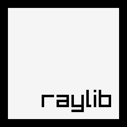

Projects of Chavo del Ocho
Steps for making my projects
- make a repo of git
- make little steps and making a commit using
semver version controller
- making an objective for each project
Fri : Application launcher
Fri is a minimalistic application luancher using
Raylib

Haki: Screenshot Wayalnd Program
haki is a simple wayland screenshot program that uses
grim and
slurp
Cpt :
cp
but with threads
a threaded way of copy of files and directories using
Zig